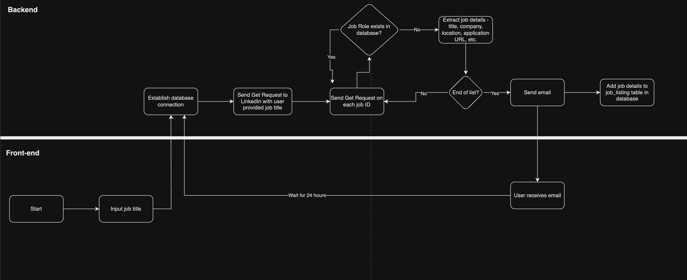
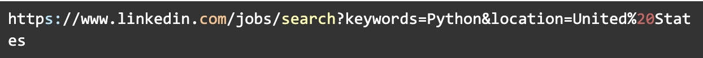
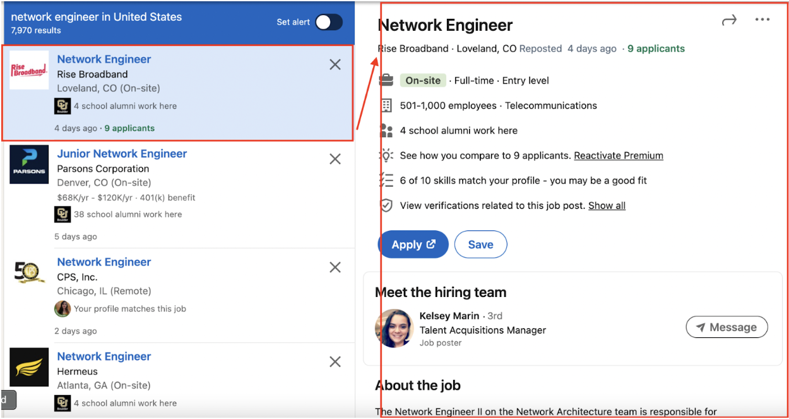
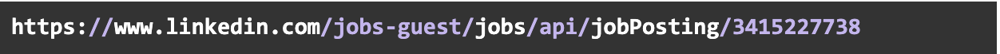

Job searching in itself is a full-time job and a time-consuming task, especially during peak job hunting seasons, like the search for summer internships. I found that opening job search apps, manually entering search criteria, and filtering job listings was a repetitive and time-intensive process.
To address this problem, I created a job search bot to streamline the job search process. The bot is designed to scrape job listings from LinkedIn. Its core functionality includes scraping job listings based on a user-provided job title, sending email notifications when new job listings are discovered, and providing application URLs if available. This solution aims to save job seekers valuable time and effort by automating the job search and notification process.
Here’s a flowchart of the entire process.

To build this LinkedIn job search bot, I utilized two Python modules, Requests and BeautifulSoup.
I also used Burp Suite, which allowed me to analyze response headers.
The bot starts by sending a GET request to LinkedIn, initiating a job search based on the user-provided job title. BeautifulSoup library is used to parse and extract information from the retrieved HTML content of LinkedIn job listings.
On analyzing the headers on Burpsuite, I noticed the Linkedin’s URL structure for listing all job roles with a specific job title.

I took advantage of LinkedIn’s search feature. By analyzing this structure, I realized that I could modify the "keywords" and "location" parameters in the URL to target different job listings. This flexibility became a core feature of the bot, allowing me to easily tailor the job search.
One of the key challenges I encountered was retrieving detailed information from LinkedIn's job listings, specifically when clicking the small preview box on the left side.

This information includes crucial details such as job location, application URL, etc.
To address this challenge, I employed Burp Suite. I started by clearing all sessions in Burp and then refreshed LinkedIn pages.
Next, I refreshed the LinkedIn page to view a selected job role, paying close attention to the response headers.
During this analysis, I observed that LinkedIn was making requests to the following URL under the hood:

Here, the last number in the URL represents the jobID, which turned out to be unique for each job role. I tweaked it with other jobID’s and confirmed that it was indeed unique for ever job role.
By sending a GET request to the above URL and changing the jobID based on the job role, I could easily extract detailed job information.
The jobID was conveniently located under the div element with the attribute data-entity-urn and it exclusively served as the identifier for each job role, making it the ideal method for obtaining precise job details. Similarly, I scraped other job details like company name, job title, job location, application URL, job URL, and date/time posted.
Voila! With the implementation of this Python script, I successfully scraped job listings.
Another issue arises—overloading users with redundant information. For example, if the user has already been notified about specific job listings, re-notifying them about the same job listings is redundant and spammy. Furthermore, when dealing with potentially hundreds of job listings, repetitive notifications become impractical. There are 3 ways I could approach this:
I could employ a list of dictionaries to store job details. This would allow me to compare previously notified job listings against newly scraped listings, ensuring users receive alerts only for genuinely new job postings. This feature optimizes the user experience by avoiding excessive and repetitive notifications. Nevertheless, a challenge arises. What if unforeseen events occur? A curious cat disrupts my machine accidentally closing my program or my laptop runs out of charge abruptly terminating my program. In such cases, the list of dictionaries, containing the record of sent job listings, would be lost. This scenario would result in a fresh start, meaning users might receive all job listings, including those they were previously alerted to.
To address this concern, I contemplated the use of data storage methods. One option was to write the data to a CSV file, which is a viable approach. However, a few key considerations guided my decision. In instances where dealing with extensive datasets—potentially hundreds or even thousands of job listings—the data size could exceed the available process memory. Moreover, given my use case involves data modification and additions (as I’ll detail later), CSV might prove less efficient, as it traverses the entire dataset line by line.
Considering these aspects, an SQL database came across as the most compelling solution. The choice to employ an SQL database has significant advantages. It is well-suited to manage substantial datasets, enabling efficient data querying and modification. It is scalable as well. Additionally, it combines the ease of use found in CSV with the added flexibility to export data in CSV format if required.
With the job listings neatly organized and stored in the 'job_listing.db' SQL database, it becomes easier for me to compare datasets. Each time I scrape LinkedIn for job listings, my script accesses the database. The logic is straightforward: if an entry is found in the database, I recognize it as a job listing that has already been sent to the user, and therefore, there's no need to notify the user again. This filtering saves the user from repetitive and potentially overwhelming notifications.
In contrast, when my script encounters a job listing that does not exist in the database, it recognizes this as a new job posting. At this point, the alert mechanism is triggered and sends an email to the user. This approach ensures users receive notifications exclusively for newly posted job listings, eliminating unnecessary redundancy.
Lastly, to ensure that my job search bot consistently provides up-to-date job listings, I have implemented scheduled execution using the schedule module in Python. The task function, which is the core of the script, is designed to be executed every 24 hours.
To ensure that my bot doesn't send an excessive number of requests in a short period, I have implemented rate limiting. Specifically, I've configured the bot to run every 24 hours between each request. This respects LinkedIn's server capacity and ensures that the bot operates within acceptable usage limits.
My bot does not attempt to access or scrape any parts of LinkedIn that are not publicly available to users. It solely relies on the public job listing pages, ensuring that it does not access private or restricted content.
My bot does not attempt to log in or access any user accounts on LinkedIn. It does not seek any form of unauthorized access to the website.